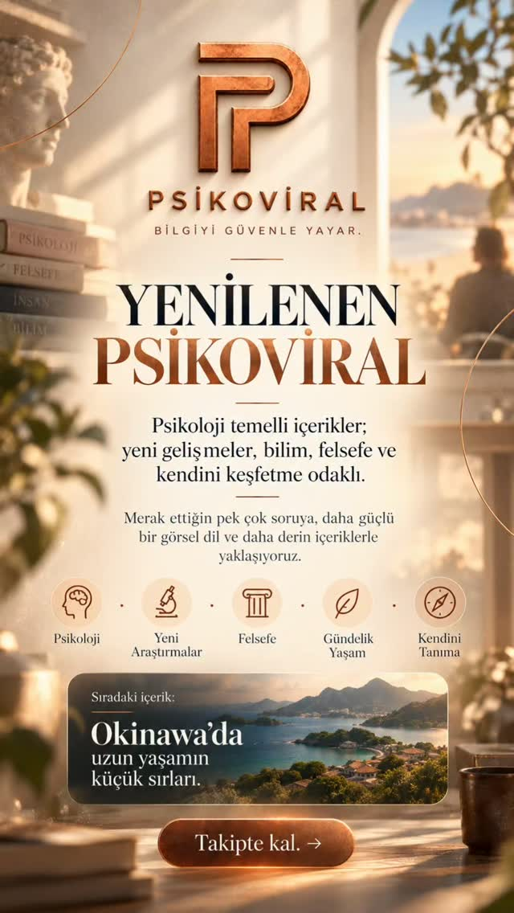
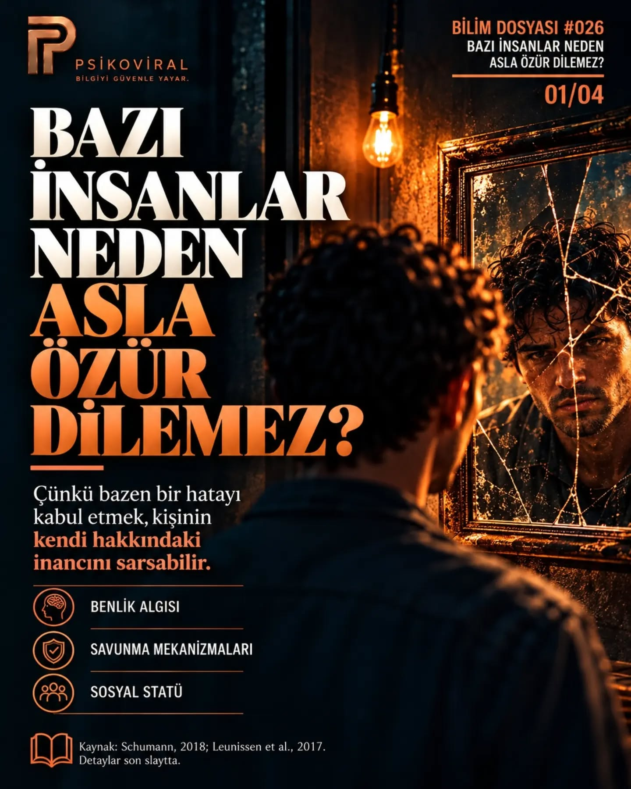
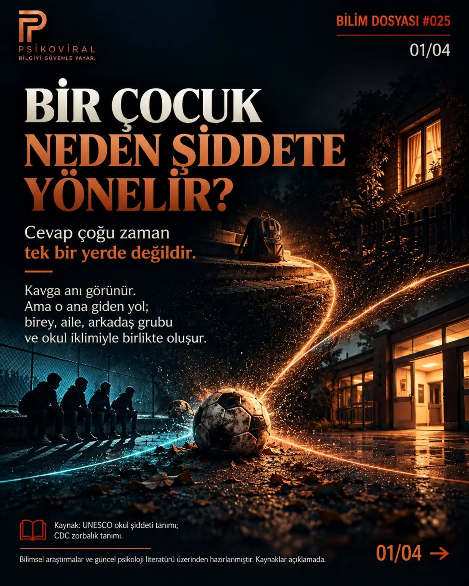
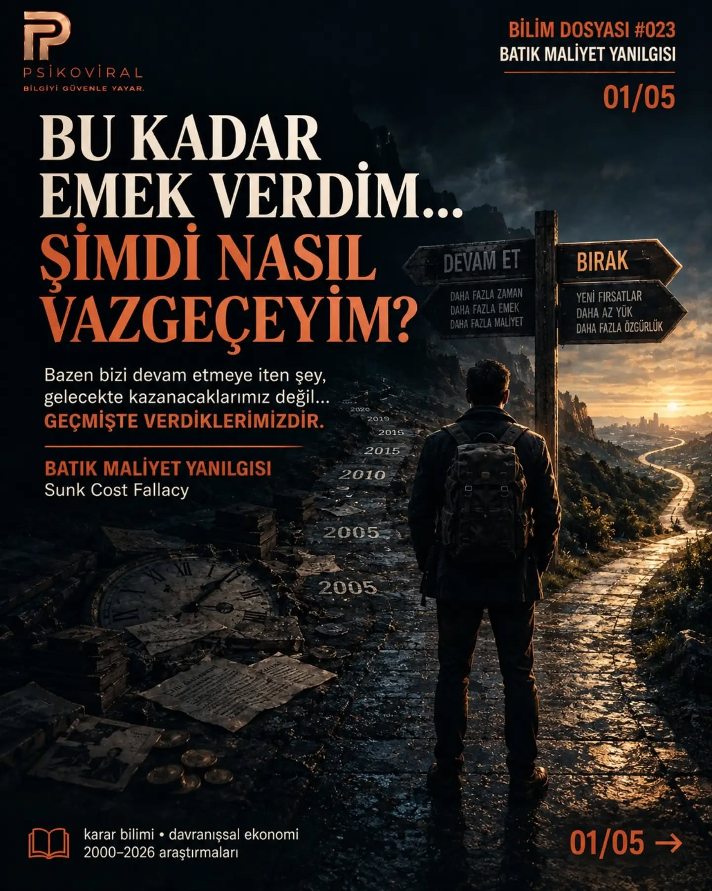

Merakına bir yer aç.
Bilim Dosyaları, Reels ve mini belgeseller. Konuya veya formata göre keşfet.
KEŞFİNİ BEKLİYOR

Okinawa: Uzun yaşamın sırrı ne?
100 yaşını aşmak yalnızca genlerle açıklanabilir mi?
Web dosyasını oku
Birinin seni onaylamaması neden bütün gününü bozabiliyor?
Değerini başkalarının tepkisine bağladığında belirsizlik bile tehdit gibi hissedilebilir.
Web dosyasını oku
Sevilmek istemek zayıflık değildir
Yakınlık ihtiyacı doğaldır; kendini yalnızca sevilince değerli hissetmek ise başka bir meseledir.
Web dosyasını oku
Yenilenen PSİKOVİRAL
Psikoloji, yeni araştırmalar, felsefe ve günlük hayat. PSİKOVİRAL’in yeni dönemine bir bakış.
Instagram’da izle
Her yorgunluk tükenmişlik değildir
Tükenmişlik, yorgunluktan daha geniş bir örüntüdür ve yalnızca kişinin sorunu değildir.
Web dosyasını oku
Bazı insanlar neden asla özür dilemez?
Hata yaptığını kabul etmek, bazen kişinin kendisiyle ilgili inançlarını sarsabilir. Özür dilemeye benlik algısı, savunma mekanizmaları ve sosyal statü üzerinden bir bakış.
Instagram dosyasını keşfet
Bir çocuk neden şiddete yönelir?
Bu sorunun yanıtı tek bir yerde değil. Bireysel etkenler, aile, arkadaş ilişkileri ve okul iklimi birlikte ele alınıyor.
Instagram dosyasını keşfet
Halo etkisi: Bir özellik bütün gerçek değildir
Tek bir olumlu özellik, bir insan ya da ürün hakkındaki bütün algımızı nasıl şekillendirir?
Web dosyasını oku
Bu kadar emek verdim… Şimdi nasıl vazgeçeyim?
Batık maliyet yanılgısı: Bir kararı sürdürürken gelecekteki kazanımlardan çok geçmişteki yatırımların baskısını hissetmek.
Instagram dosyasını keşfet
Güçlü olmak, hiç yıkılmamak değil.
Psikolojik sağlamlık üzerine bir dosya: Hiç zorlanmamak yerine, zorlanmanın ardından yeniden toparlanabilmek.
Instagram dosyasını keşfet
Yapay zekâ işlerimizi mi alacak?
Belki de asıl soru bu değil: Yapay zekânın ürettiği değer nasıl paylaşılacak?
Web dosyasını oku
333 yıl önce sorulan soru: Çocuklar nasıl öğrenir?
John Locke'un 1693'te sorduğu sorular bugün hâlâ masada.
Web dosyasını oku
Kendi söylediğimiz bir şeye zamanla inanabilir miyiz?
Öz-aldatma, “kendine yalan söylemek” kadar basit bir süreç değil.
Web dosyasını oku
Çocuklar mı değişti, yoksa çocukluk mu?
Çocukların daha az sokakta oynamasının nedeni sadece ekranlar değil.
Web dosyasını oku
Bu aramada bir dosya bulamadık.
Daha kısa bir kelime dene veya filtreleri temizle.
Burada web dosyaları ve arşive eklenen Instagram yayınları birlikte yer alır. Instagram içeriklerinin tamamı için @psikoviral ↗